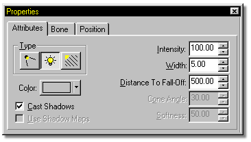
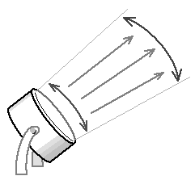
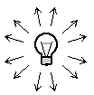
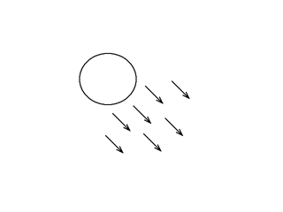

To change a lights attributes, click on the light name in the Project
Workspace. The Properties Panel will change and reflect the selected lights settings.
To change a light type, simply press the appropriate light type button. You
will notice that the light will change in the Choreography window to reflect the
new type.
Kliegs

Klieg lights are the only light type that has an option for using Shadow Maps,
which speed up rendering, and provide softer looking shadows.
Bulbs

Suns
Suns are unidirectional in the direction of the Sun's Light Target. Changes in Width, Focal length, and Distance have no effect on Suns. A Sun's intensity remains constant, meaning there is no fall-off.

Tell Me About:
Shadows
Light Color
Light Width
Distance To Falloff
Focal Length of Lights
Light Hints
Naming Lights
Removing Lights